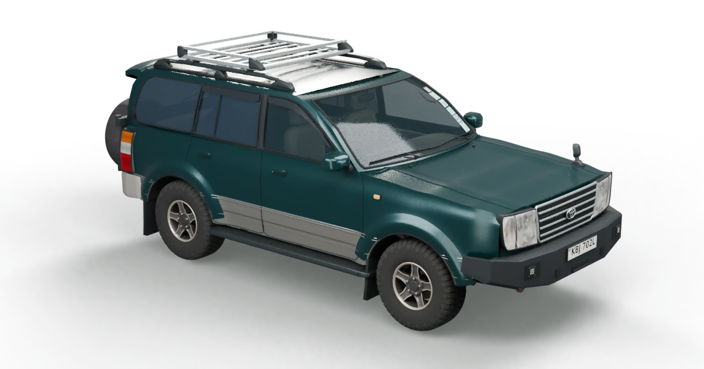

TOYOTA 100 SERIES
Land Cruiser V8
KBJ 702L
Loading model…
Drag to orbit · ScrollPinch to zoom
Chassis and suspension are reconstructed from the 100 Series layout.
Vehicle details
Select a detail to inspect it in 3D.